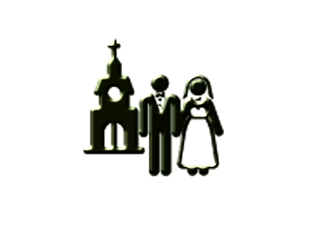

Campanario de la iglesia de Siruela, Badajoz / Fotografía: Yon Recio
Texto: Borja Galán e Inés Cuervo
Gráficos: Inés Cuervo y Cristina Cándido
Entrevistas: Borja Galán, Cristina Cándido y Yon Recio
Diseño y fotografía: Yon Recio y Nicol Montilla
Maquetación web: Yon Recio
Muchas personas que asisten de manera habitual a la misa de los domingos en la parroquia más cercana a sus casas,
han podido comprobar que muchos de los sacerdotes que ofician misas allí son de edad avanzada o de procedencia extranjera.
¿Por qué ha cambiado el perfil de estos religiosos?
La vocación religiosa,
en cifras

Los datos que se han utilizado para este trabajo
proceden de los seminarios de las diócesis que publica
en su portal la Conferencia Episcopal, así como del Centro de Investigaciones Sociológicas (CIS)
y del Colegio Internacional Bidasoa.